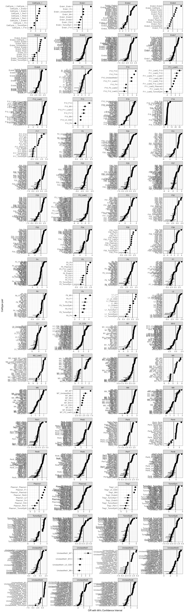
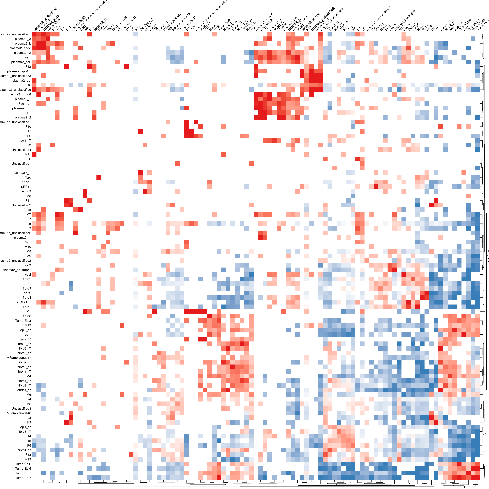
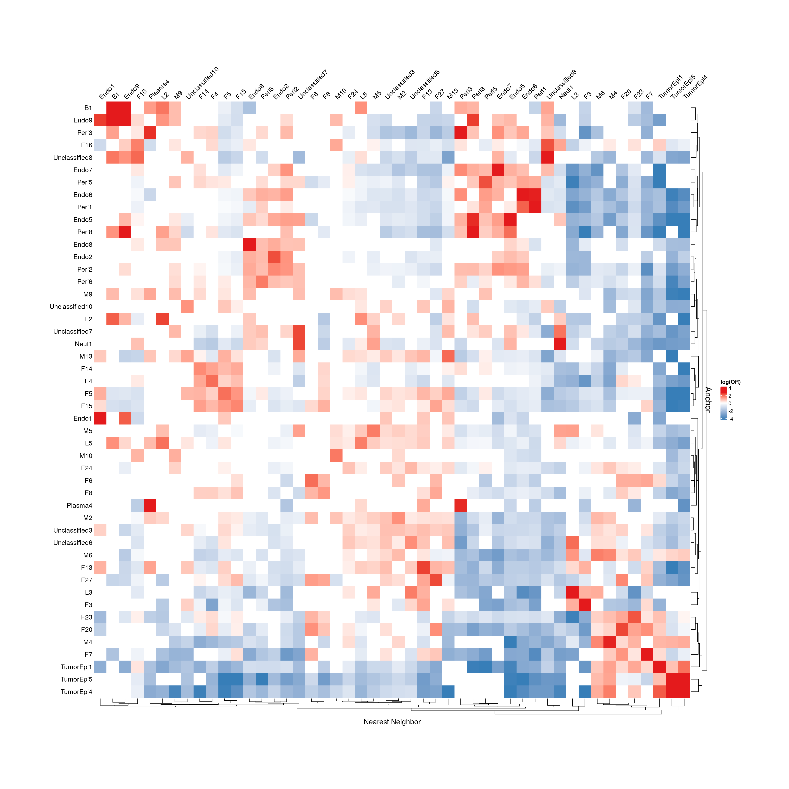
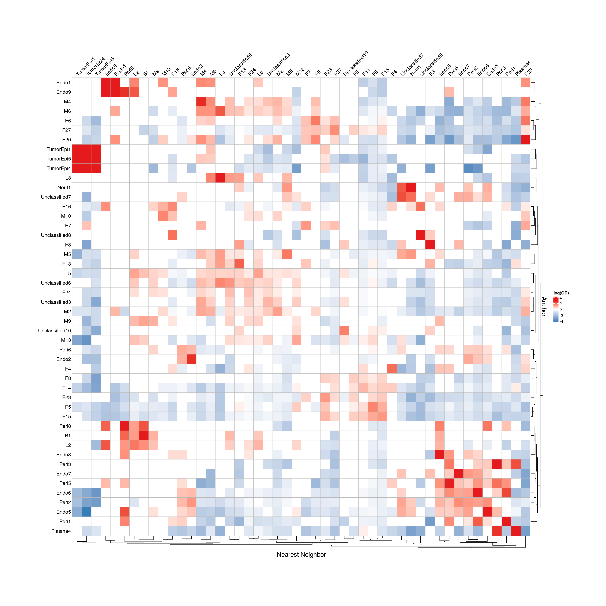
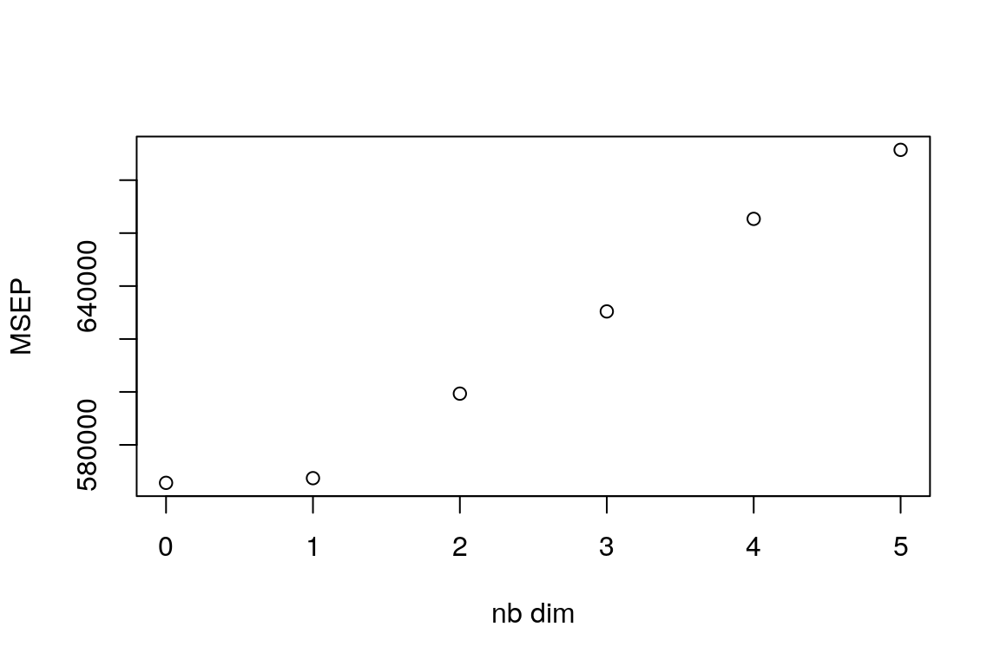
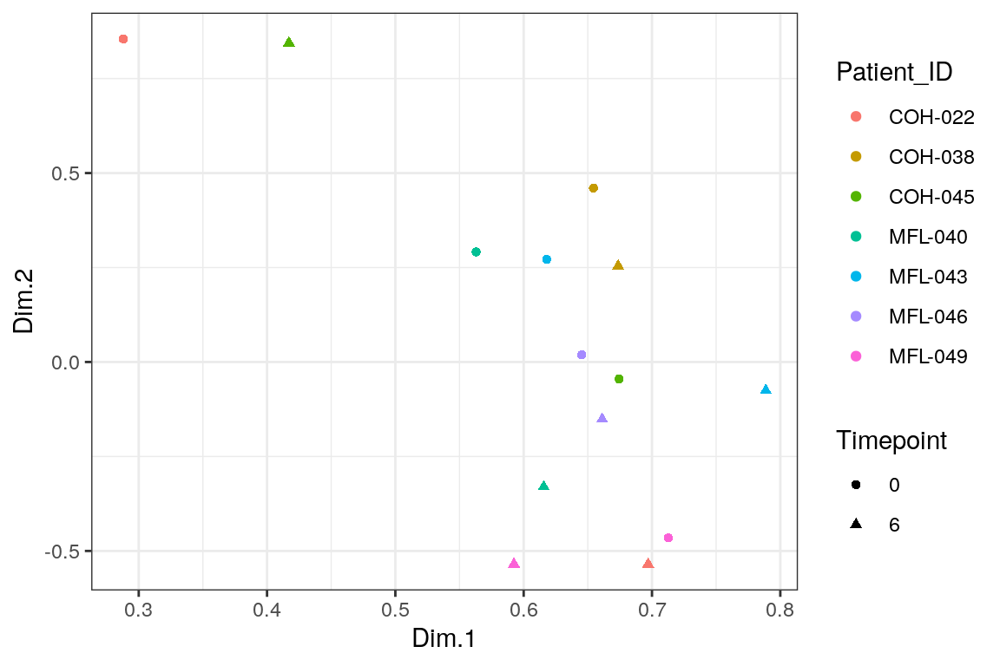
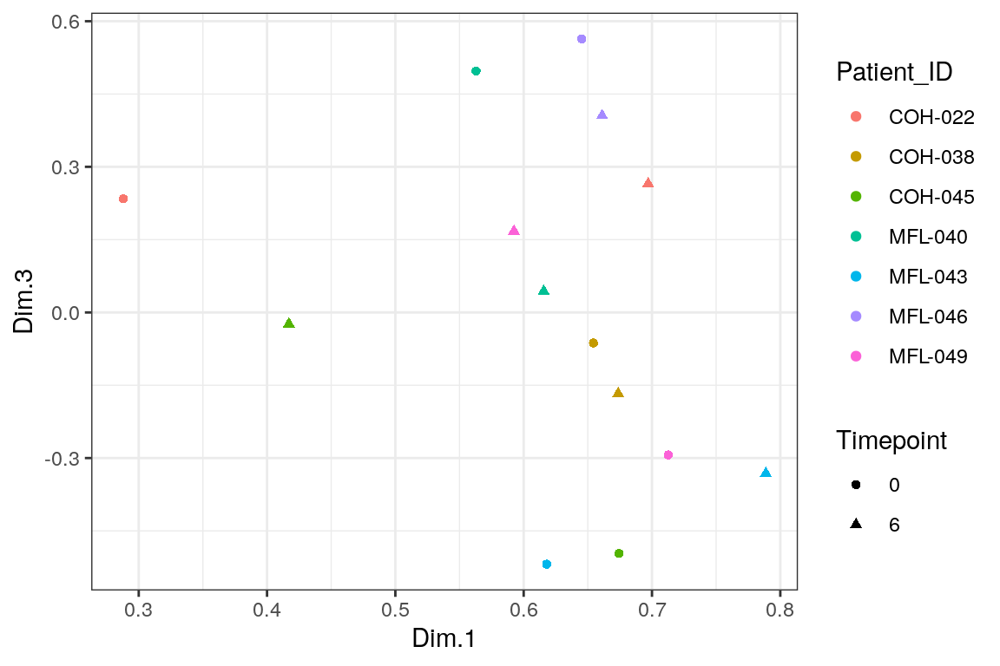
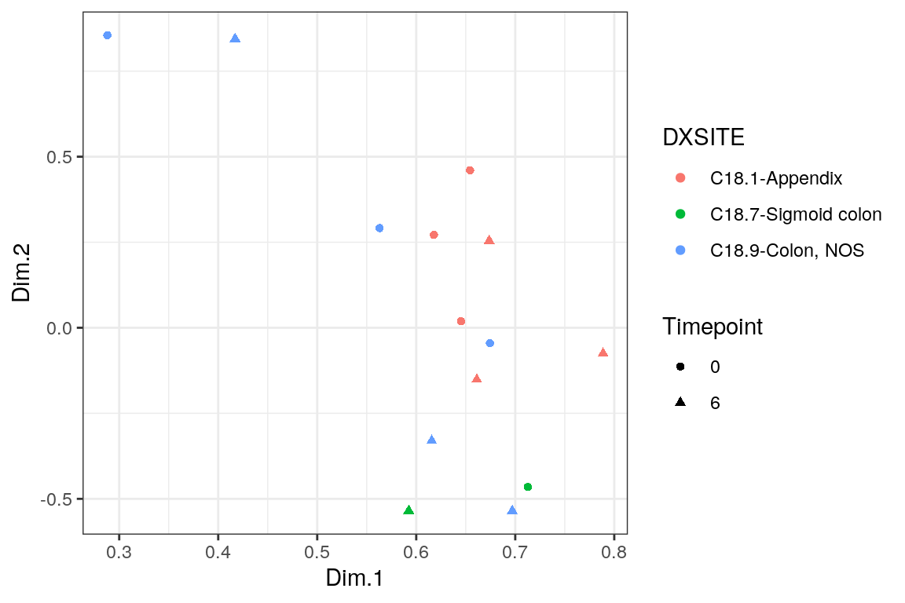
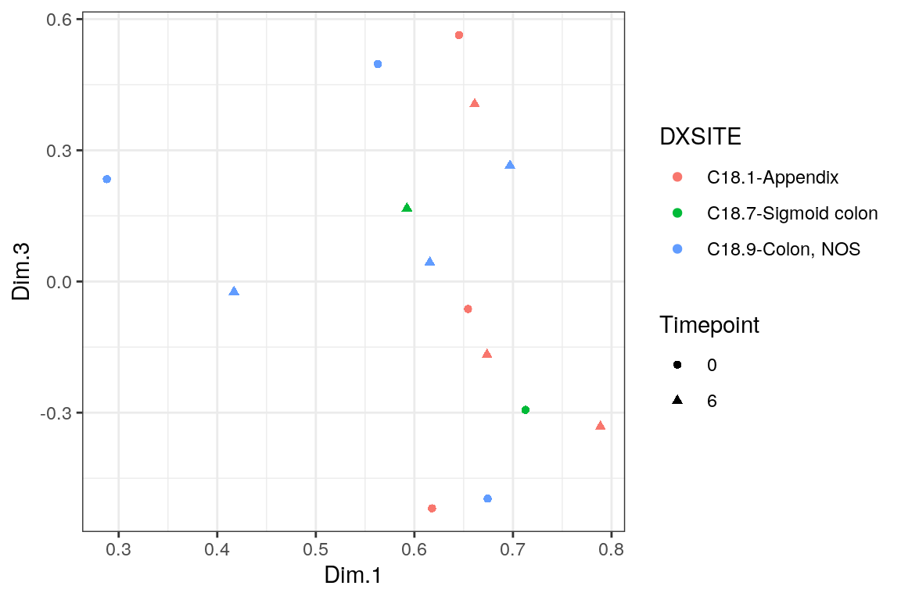
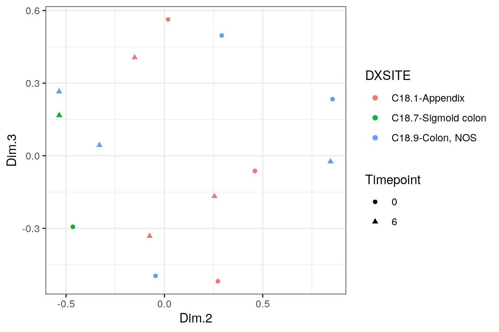

Plotting the results of the proximity analysis on PIPAC Xenium data
heinin
2025-09-19
Last updated: 2025-11-20
Checks: 5 2
Knit directory: PIPAC_spatial/
This reproducible R Markdown analysis was created with workflowr (version 1.7.1). The Checks tab describes the reproducibility checks that were applied when the results were created. The Past versions tab lists the development history.
The R Markdown file has unstaged changes. To know which version of
the R Markdown file created these results, you’ll want to first commit
it to the Git repo. If you’re still working on the analysis, you can
ignore this warning. When you’re finished, you can run
wflow_publish to commit the R Markdown file and build the
HTML.
Great job! The global environment was empty. Objects defined in the global environment can affect the analysis in your R Markdown file in unknown ways. For reproduciblity it’s best to always run the code in an empty environment.
The command set.seed(20240917) was run prior to running
the code in the R Markdown file. Setting a seed ensures that any results
that rely on randomness, e.g. subsampling or permutations, are
reproducible.
Great job! Recording the operating system, R version, and package versions is critical for reproducibility.
Nice! There were no cached chunks for this analysis, so you can be confident that you successfully produced the results during this run.
Using absolute paths to the files within your workflowr project makes it difficult for you and others to run your code on a different machine. Change the absolute path(s) below to the suggested relative path(s) to make your code more reproducible.
| absolute | relative |
|---|---|
| /home/hnatri/PIPAC_spatial/ | . |
| /home/hnatri/PIPAC_spatial/code/PIPAC_colors_themes.R | code/PIPAC_colors_themes.R |
| /home/hnatri/PIPAC_spatial/code/plot_functions.R | code/plot_functions.R |
| /home/hnatri/PIPAC_spatial/enrichment_tumor_scores_compiled.tsv | enrichment_tumor_scores_compiled.tsv |
| /home/hnatri/PIPAC_spatial/tumor_proximity_compiled.tsv | tumor_proximity_compiled.tsv |
| /home/hnatri/PIPAC_spatial/enrichment_pretreatment_scores_compiled.tsv | enrichment_pretreatment_scores_compiled.tsv |
| /home/hnatri/PIPAC_spatial/tumor_pretreatment_proximity_compiled.tsv | tumor_pretreatment_proximity_compiled.tsv |
| /home/hnatri/PIPAC_spatial/enrichment_posttreatment_scores_compiled.tsv | enrichment_posttreatment_scores_compiled.tsv |
| /home/hnatri/PIPAC_spatial/tumor_posttreatment_proximity_compiled.tsv | tumor_posttreatment_proximity_compiled.tsv |
Great! You are using Git for version control. Tracking code development and connecting the code version to the results is critical for reproducibility.
The results in this page were generated with repository version 2221fdb. See the Past versions tab to see a history of the changes made to the R Markdown and HTML files.
Note that you need to be careful to ensure that all relevant files for
the analysis have been committed to Git prior to generating the results
(you can use wflow_publish or
wflow_git_commit). workflowr only checks the R Markdown
file, but you know if there are other scripts or data files that it
depends on. Below is the status of the Git repository when the results
were generated:
Ignored files:
Ignored: .RData
Ignored: analysis/figure/
Ignored: analysis/finalize_annotations.html
Ignored: cell_immune_cluster_marker_annotations.tsv
Ignored: cell_nonimmune_cluster_marker_annotations.tsv
Ignored: celltype_markers.tsv
Ignored: code/.Rhistory
Ignored: code/Proximity_analysis/.DS_Store
Ignored: code/Proximity_analysis/data/
Ignored: code/Proximity_analysis/output/
Ignored: code/RSC_latest_EDM_2025-08-06/
Ignored: code/celltype_proximity_tumor.Rout
Ignored: immune_cluster_marker_annotations_2ndpass.tsv
Ignored: immune_prelim_annot_topmarkers.tsv
Ignored: nonimmune_cluster_marker_annotations_2ndpass.tsv
Ignored: nonimmune_prelim_annot_topmarkers.tsv
Untracked files:
Untracked: analysis/finalize_annotations.Rmd
Untracked: analysis/immune_annotation_cell.Rmd
Untracked: analysis/nonimmune_annotation_cell.Rmd
Untracked: code/.RDataTmp
Untracked: code/.RDataTmp1
Untracked: code/celltype_proximity_09232025.R
Untracked: code/celltype_proximity_tumor.R
Untracked: code/denoist_chunk.R
Untracked: code/plot_informative_cluster_markers.R
Untracked: code/slurm.26717417.err
Untracked: code/slurm.26717417.out
Untracked: enrichment_posttreatment_scores_compiled.tsv
Untracked: enrichment_pretreatment_scores_compiled.tsv
Untracked: enrichment_tumor_scores_compiled.tsv
Untracked: output/enrichment_scores_compiled.tsv
Untracked: output/proximity_compiled.tsv
Untracked: tumor_posttreatment_proximity_compiled.tsv
Untracked: tumor_pretreatment_proximity_compiled.tsv
Untracked: tumor_proximity_compiled.tsv
Unstaged changes:
Deleted: Rplots.pdf
Modified: analysis/Xenium_preprocess_wholecell.Rmd
Modified: analysis/add_metadata.Rmd
Modified: analysis/annotation_cell.Rmd
Modified: analysis/arm3_comparative_analysis.Rmd
Modified: analysis/arm3_prepost_plots_DEGs.Rmd
Modified: analysis/compare_cellular_nuclear.Rmd
Modified: analysis/compare_cellular_nuclear_denoist_annot.Rmd
Modified: analysis/index.Rmd
Modified: analysis/niche_construction_ncells3k_nneighbors20.Rmd
Modified: analysis/pca_variance_decomp.Rmd
Modified: analysis/proximity.Rmd
Modified: analysis/splitting_samples.Rmd
Modified: code/PIPAC_colors_themes.R
Modified: code/anndata_to_seurat.R
Modified: code/denoist.R
Modified: code/pairwise_proximity.R
Modified: code/pairwise_proximity_chunk.R
Modified: code/parse_denoist_res.R
Modified: code/plot_functions.R
Modified: code/run_rscript.sh
Modified: code/seurat_to_anndata.R
Modified: code/update_metadata.R
Note that any generated files, e.g. HTML, png, CSS, etc., are not included in this status report because it is ok for generated content to have uncommitted changes.
These are the previous versions of the repository in which changes were
made to the R Markdown (analysis/proximity.Rmd) and HTML
(docs/proximity.html) files. If you’ve configured a remote
Git repository (see ?wflow_git_remote), click on the
hyperlinks in the table below to view the files as they were in that
past version.
| File | Version | Author | Date | Message |
|---|---|---|---|---|
| Rmd | 7c46eb3 | heinin | 2025-09-29 | Updated to denoised transcript data |
Load packages
suppressPackageStartupMessages({
library(workflowr)
library(dplyr)
library(Seurat)
library(SeuratObject)
library(SeuratDisk)
library(tidyverse)
library(tibble)
library(ggplot2)
library(ggpubr)
library(ggrepel)
library(googlesheets4)
library(workflowr)
library(patchwork)
library(spatstat)
library(missMDA)
library(FactoMineR)})Environment variables and helper functions
setwd("/home/hnatri/PIPAC_spatial/")
set.seed(9999)
options(future.globals.maxSize = 30000 * 1024^2)
options(scipen = 99999)
options(ggrepel.max.overlaps = Inf)
source("/home/hnatri/PIPAC_spatial/code/PIPAC_colors_themes.R")
source("/home/hnatri/PIPAC_spatial/code/plot_functions.R")Import data
seurat_data <- readRDS("/tgen_labs/banovich/PIPAC/Seurat/cell_merged_spatial_filtered_splitsamples_clustered_NN30_PC50_Seurat_denoIST.rds")
enrichment_scores_compiled_tumor <- read.table("/home/hnatri/PIPAC_spatial/enrichment_tumor_scores_compiled.tsv",
header = T)
proximity_compiled_tumor <- read.table("/home/hnatri/PIPAC_spatial/tumor_proximity_compiled.tsv",
header = T)Which celltypes are proximal to each other
Myeloid cluster associated with infiltrating
lymphocytes:
M1 (L2-L4) - SPP1 intermediate
M2 (L5) - suppressive, SPP1 high
M6 (L1-L5) - Suppressive, SPP1 intermediate
M7 (L3, also F3) - Suppressive, SPP1 intermediate
M8 (L5, also Mast, Endo) - Suppressive, cell cycle markers, SPP1
high
Myeloid cluster associated with CAFs:
M5 (F2-F3, also L2-L3) - Suppressive, SPP1 intermediate
Myeloid cluster associated with tumor cells:
M4 (EpiTumor2 (and less so 1), also L, Plasma, F2-F3) - Possibly not
myeloid?
M3, no significant enrichment.
M9, no significant enrichment.
CAFs not enriched near tumor cells, but specific myeloid
clusters:
F1 (COL1A2): M1
F2 (COL1A2, higher FN1): M4-M5
F3 (no COL1A2) = M4,5,7,8 and Mast, Endo2, L2-3)
F4 (COL1A2): Plasma 1-3, fever F4 near other F clusters.
enrichment_scores_compiled_tumor %>%
mutate(pair = paste0(prox_ct, "_", prox_to),
sig = ifelse(pvale_adjust < 0.01, "sig", "nonsig")) %>%
filter(sig == "sig") %>%
drop_na() %>%
arrange(pair) %>%
ggplot(aes(x = reorder(pair, log_or), y = log_or)) +
geom_pointrange(aes(ymin = log_or05, ymax = log_or95)) +
labs(y = "OR with 95% Confidence Interval",
x = "Celltype pair") +
geom_hline(yintercept = 0) +
coord_flip() +
theme_bw() +
facet_wrap(~prox_ct, scales = "free", ncol = 4)
Plot differences between timepoints and tissues
proximity_compiled_tumor$Tissue <- mapvalues(proximity_compiled_tumor$sample,
from = seurat_data$Sample,
to = seurat_data$Tissue)
proximity_compiled_tumor$Timepoint <- mapvalues(proximity_compiled_tumor$sample,
from = seurat_data$Sample,
to = seurat_data$Timepoint)
proximity_compiled_tumor$Timepoint <- factor(proximity_compiled_tumor$Timepoint,
levels = c(0, 6))
#unique(paste0(proximity_compiled$anchor_cell_ct, "_", proximity_compiled$prox_cell_ct))
#testtt <- proximity_compiled %>%
# mutate(pair = paste0(anchor_cell_ct, "_", prox_cell_ct)) %>%
# arrange(anchor_cell_ct) %>%
# filter(Tissue == "Tumor",
# anchor_cell_ct == "M2",
# prox_cell_ct != "M2")
summaries <- proximity_compiled_tumor %>%
arrange(anchor_cell_ct) %>%
mutate(pair = paste0(anchor_cell_ct, "_", prox_cell_ct)) %>%
arrange(anchor_cell_ct) %>%
filter(Tissue == "Tumor",
anchor_cell_ct %in% c("F1", "F2", "F3", "F4", "F5"),
prox_cell_ct %in% setdiff(unique(seurat_data$Annotation), c("F1", "F2", "F3", "F4", "F5"))) %>%
group_by(Timepoint, pair) %>%
dplyr::summarise(nn = n()) %>%
mutate(timepoint_pair = paste0(Timepoint, "_", pair)) %>%
filter(nn > 10) %>%
group_by(pair) %>%
filter(n() > 1)
p1 <- proximity_compiled_tumor %>%
mutate(pair = paste0(anchor_cell_ct, "_", prox_cell_ct)) %>%
mutate(timepoint_pair = paste0(Timepoint, "_", pair)) %>%
arrange(anchor_cell_ct) %>%
filter(timepoint_pair %in% summaries$timepoint_pair,
Tissue == "Tumor",
anchor_cell_ct == "F1",
prox_cell_ct != "F1") %>%
ggboxplot(x = "Timepoint", y = "distance", fill = "Timepoint",
add = "jitter", facet.by = "pair",
ylim = c(0, 150), short.panel.labs = T) +
NoLegend()
p1 + stat_compare_means(label = "p.format", label.y = 130)
p2 <- proximity_compiled_tumor %>%
mutate(pair = paste0(anchor_cell_ct, "_", prox_cell_ct)) %>%
mutate(timepoint_pair = paste0(Timepoint, "_", pair)) %>%
arrange(anchor_cell_ct) %>%
filter(timepoint_pair %in% summaries$timepoint_pair,
Tissue == "Tumor",
anchor_cell_ct == "F2",
prox_cell_ct != "F2") %>%
ggboxplot(x = "Timepoint", y = "distance", fill = "Timepoint",
add = "jitter", facet.by = "pair",
ylim = c(0, 150), short.panel.labs = T) +
NoLegend()
p2 + stat_compare_means(label = "p.format", label.y = 130)
p3 <- proximity_compiled_tumor %>%
mutate(pair = paste0(anchor_cell_ct, "_", prox_cell_ct)) %>%
mutate(timepoint_pair = paste0(Timepoint, "_", pair)) %>%
arrange(anchor_cell_ct) %>%
filter(timepoint_pair %in% summaries$timepoint_pair,
Tissue == "Tumor",
anchor_cell_ct == "F3",
prox_cell_ct != "F3") %>%
ggboxplot(x = "Timepoint", y = "distance", fill = "Timepoint",
add = "jitter", facet.by = "pair",
ylim = c(0, 150), short.panel.labs = T) +
NoLegend()
p3 + stat_compare_means(label = "p.format", label.y = 130)
p4 <- proximity_compiled_tumor %>%
mutate(pair = paste0(anchor_cell_ct, "_", prox_cell_ct)) %>%
mutate(timepoint_pair = paste0(Timepoint, "_", pair)) %>%
arrange(anchor_cell_ct) %>%
filter(timepoint_pair %in% summaries$timepoint_pair,
Tissue == "Tumor",
anchor_cell_ct == "F4",
prox_cell_ct != "F4") %>%
ggboxplot(x = "Timepoint", y = "distance", fill = "Timepoint",
add = "jitter", facet.by = "pair",
ylim = c(0, 150), short.panel.labs = T) +
NoLegend()
p4 + stat_compare_means(label = "p.format", label.y = 130)
#p5 <- proximity_compiled %>%
# mutate(pair = paste0(anchor_cell_ct, "_", prox_cell_ct)) %>%
# mutate(timepoint_pair = paste0(Timepoint, "_", pair)) %>%
# arrange(anchor_cell_ct) %>%
# filter(timepoint_pair %in% summaries$timepoint_pair,
# Tissue == "Tumor",
# anchor_cell_ct == "F5",
# prox_cell_ct != "F5") %>%
# ggboxplot(x = "Timepoint", y = "distance", fill = "Timepoint",
# add = "jitter", facet.by = "pair",
# ylim = c(0, 150), short.panel.labs = T) +
# NoLegend()
#
#p5 + stat_compare_means(label = "p.format", label.y = 130)
#proximity_compiled %>%
# mutate(pair = paste0(anchor_cell_ct, "_", prox_cell_ct)) %>%
# arrange(anchor_cell_ct) %>%
# filter(Tissue == "Tumor",
# anchor_cell_ct == "M2",
# prox_cell_ct != "M2") %>%
# ggplot(aes(x = Timepoint, y = distance, fill = Timepoint)) +
# geom_violin(alpha = 0.5) +
# geom_point(position = position_jitter(seed = 1, width = 0.2)) +
# facet_wrap(~pair) +
# theme(legend.position = "none") +
# theme_classic()Heatmaps of celltype proximity before and after PIPAC
All tumors
enrichment_scores_compiled_tumor <- enrichment_scores_compiled[complete.cases(enrichment_scores_compiled_tumor),]
pval <- reshape2::dcast(prox_to ~ prox_ct, value.var = 'pvale_adjust', data = enrichment_scores_compiled_tumor)
or <- reshape2::dcast(prox_to ~ prox_ct, value.var = 'log_or', data = enrichment_scores_compiled_tumor)
rownames(pval) <- pval$prox_to
pval$prox_to <- NULL
rownames(or) <- or$prox_to
or$prox_to <- NULL
ct_pval<- pval
ct_pval[is.na(ct_pval)] = 1
ct_or<- or
ct_or[is.na(ct_or)] = 0
ct_or[is.infinite(as.matrix(ct_or))] <- 0
ct_or[ct_pval > 0.05] = 0 # replace non-sig results with 0
calc_heatmap_w <- function(df){width <- ncol(df) * 0.24; return(width)}
calc_heatmap_h <- function(df){height <- nrow(df) * 0.18; return(height)}
# plot odds ratio
min01 <- quantile(as.matrix(ct_or), 0.01)
max99 <- quantile(as.matrix(ct_or), 0.99)
col_fun = colorRamp2(c(min01, 0, max99), c("#377EB8", "white", "#E41A1C"))
hp <- Heatmap(t(ct_or), name = 'log(OR)',
row_title = 'Anchor',
row_title_side = 'right',
row_names_side = 'left',
row_dend_side = 'right',
row_title_gp = gpar(fontsize = 15),
column_title = 'Nearest Neighbor',
column_title_side = "bottom",
column_names_side = 'top',
column_names_rot = 45,
column_dend_side = 'bottom',
column_title_gp = gpar(fontsize = 15),
rect_gp = gpar(col = "#b8b7b6", lwd = 0.5),
width = unit(calc_heatmap_w(ct_or), "in"),
height = unit(calc_heatmap_h(ct_or), "in"),
na_col = 'white',
col = col_fun,
row_dend_width = unit(0.5, 'cm'),
column_dend_height = unit(0.5, 'cm'))
draw(hp)
#pdf(".pdf",
# width = 12,
# height = 10)
#draw(hp)
#dev.off()Pre-treatment tumors
enrichment_scores_compiled <- read.table("/home/hnatri/PIPAC_spatial/enrichment_pretreatment_scores_compiled.tsv",
header = T)
proximity_compiled <- read.table("/home/hnatri/PIPAC_spatial/tumor_pretreatment_proximity_compiled.tsv",
header = T)
enrichment_scores_compiled <- enrichment_scores_compiled[complete.cases(enrichment_scores_compiled),]
pval <- reshape2::dcast(prox_to ~ prox_ct, value.var = 'pvale_adjust', data = enrichment_scores_compiled)
or <- reshape2::dcast(prox_to ~ prox_ct, value.var = 'log_or', data = enrichment_scores_compiled)
rownames(pval) <- pval$prox_to
pval$prox_to <- NULL
rownames(or) <- or$prox_to
or$prox_to <- NULL
ct_pval<- pval
ct_pval[is.na(ct_pval)] = 1
ct_or<- or
ct_or[is.na(ct_or)] = 0
ct_or[is.infinite(as.matrix(ct_or))] <- 0
ct_or[ct_pval > 0.05] = 0 # replace non-sig results with 0
calc_heatmap_w <- function(df){width <- ncol(df) * 0.24; return(width)}
calc_heatmap_h <- function(df){height <- nrow(df) * 0.18; return(height)}
# plot odds ratio
min01 <- quantile(as.matrix(ct_or), 0.01)
max99 <- quantile(as.matrix(ct_or), 0.99)
col_fun = colorRamp2(c(min01, 0, max99), c("#377EB8", "white", "#E41A1C"))
ct_or <- t(ct_or)
hp <- Heatmap(ct_or, name = 'log(OR)',
row_title = 'Anchor',
row_title_side = 'right',
row_names_side = 'left',
row_dend_side = 'right',
row_title_gp = gpar(fontsize = 15),
column_title = 'Nearest Neighbor',
column_title_side = "bottom",
column_names_side = 'top',
column_names_rot = 45,
column_dend_side = 'bottom',
na_col = 'white',
col = col_fun,
row_dend_width = unit(0.5, 'cm'),
column_dend_height = unit(0.5, 'cm'),
width = ncol(ct_or)*unit(5, "mm"),
height = nrow(ct_or)*unit(5, "mm"))
draw(hp)
#pdf(".pdf",
# width = 12,
# height = 10)
#draw(hp)
#dev.off()Post-treatment tumors
post_enrichment_scores_compiled <- read.table("/home/hnatri/PIPAC_spatial/enrichment_posttreatment_scores_compiled.tsv",
header = T)
post_proximity_compiled <- read.table("/home/hnatri/PIPAC_spatial/tumor_posttreatment_proximity_compiled.tsv",
header = T)
post_enrichment_scores_compiled <- post_enrichment_scores_compiled[complete.cases(post_enrichment_scores_compiled),]
post_pval <- reshape2::dcast(prox_to ~ prox_ct, value.var = 'pvale_adjust', data = post_enrichment_scores_compiled)
post_or <- reshape2::dcast(prox_to ~ prox_ct, value.var = 'log_or', data = post_enrichment_scores_compiled)
rownames(post_pval) <- post_pval$prox_to
post_pval$prox_to <- NULL
rownames(post_or) <- post_or$prox_to
post_or$prox_to <- NULL
post_ct_pval<- post_pval
post_ct_pval[is.na(post_ct_pval)] = 1
post_ct_or<- post_or
post_ct_or[is.na(post_ct_or)] = 0
post_ct_or[is.infinite(as.matrix(post_ct_or))] <- 0
post_ct_or[post_ct_pval > 0.05] = 0 # replace non-sig results with 0
post_calc_heatmap_w <- function(df){width <- ncol(df) * 0.24; return(width)}
post_calc_heatmap_h <- function(df){height <- nrow(df) * 0.18; return(height)}
# plot odds ratio
post_min01 <- quantile(as.matrix(ct_or), 0.01)
post_max99 <- quantile(as.matrix(ct_or), 0.99)
post_col_fun = colorRamp2(c(min01, 0, max99), c("#377EB8", "white", "#E41A1C"))
post_ct_or <- t(post_ct_or)
hp <- Heatmap(post_ct_or, name = 'log(OR)',
row_title = 'Anchor',
row_title_side = 'right',
row_names_side = 'left',
row_dend_side = 'right',
row_title_gp = gpar(fontsize = 15),
column_title = 'Nearest Neighbor',
column_title_side = "bottom",
column_names_side = 'top',
column_names_rot = 45,
column_dend_side = 'bottom',
column_title_gp = gpar(fontsize = 15),
rect_gp = gpar(col = "#b8b7b6", lwd = 0.5),
na_col = 'white',
col = col_fun,
row_dend_width = unit(2, 'cm'),
column_dend_height = unit(2, 'cm'),
width = ncol(ct_or)*unit(5, "mm"),
height = nrow(ct_or)*unit(5, "mm"))
draw(hp)
#pdf(".pdf",
# width = 12,
# height = 10)
#draw(hp)
#dev.off()Pre-post-delta
ct_or <- ct_or[rownames(post_ct_or), colnames(post_ct_or)]
identical(rownames(ct_or), rownames(post_ct_or))[1] TRUEidentical(colnames(ct_or), colnames(post_ct_or))[1] TRUEdelta_or <- ct_or-post_ct_or
hp <- Heatmap(delta_or, name = 'Delta of log(OR)',
row_title = 'Anchor',
row_title_side = 'right',
row_names_side = 'left',
row_dend_side = 'right',
row_title_gp = gpar(fontsize = 15),
column_title = 'Nearest Neighbor',
column_title_side = "bottom",
column_names_side = 'top',
column_names_rot = 45,
column_dend_side = 'bottom',
na_col = 'white',
col = col_fun,
row_dend_width = unit(0.5, 'cm'),
column_dend_height = unit(0.5, 'cm'),
width = ncol(ct_or)*unit(5, "mm"),
height = nrow(ct_or)*unit(5, "mm"))
draw(hp)
PCA on proximity
# A matrix of mean celltype-celltype distances in each sample
proximity_compiled_tumor$pair <- paste0(proximity_compiled_tumor$anchor_cell_ct, "_", proximity_compiled_tumor$prox_cell_ct)
proximity_matrix <- proximity_compiled_tumor %>%
group_by(sample, pair) %>%
dplyr::summarise(mean_distance = mean(distance)) %>%
ungroup() %>%
pivot_wider(names_from = sample, values_from = mean_distance) %>%
column_to_rownames(var = "pair") %>%
as.matrix()
#library(naniar)
#library(missForest)
#
#gg_miss_var(as.data.frame(proximity_matrix))# Estimate the number of components from incomplete data
nb <- estim_ncpPCA(proximity_matrix,
method.cv = "Kfold",
verbose = F)
plot(0:5, nb$criterion, xlab = "nb dim", ylab = "MSEP")
res.comp <- imputePCA(proximity_matrix, ncp = 5) # iterativePCA algorithm
res.comp$completeObs[1:3,] # the imputed data set 20-010121T_(2_5_24) 20-010121T_(3_26_24) 20-010121T_(5_7_24)
B1_B1 11.98845 27.81441 24.66759
B1_DC 22.53503 25.22894 22.46041
B1_Endo1 23.21335 20.57846 32.34658
20-010121T_(6_19_24) BSJ-38-1 BSJ-38-3 JM-45-1 JM-45-3
B1_B1 10.52710 16.81228 15.000269 9.046612 25.76966
B1_DC 24.36328 18.77784 8.299403 14.356003 39.02638
B1_Endo1 28.21909 18.72778 20.128392 17.164768 36.55322
SF230726-002257 SF230912-002063 SF230915-002249 SF231027-005404
B1_B1 12.15591 9.603317 8.221449 19.56984
B1_DC 23.52740 28.579921 21.686956 22.22787
B1_Endo1 23.81207 34.315085 16.236748 39.88652
SS-22-1 SS-22-3
B1_B1 5.955864 23.03500
B1_DC 30.793000 33.35659
B1_Endo1 32.333422 33.36800#imp <- cbind.data.frame(res.comp$completeObs, WindDirection)
res.pca <- PCA(res.comp$completeObs,
#quanti.sup = 1,
#quali.sup = 12,
ncp = 5,
graph = FALSE)
pcs <- as.data.frame(res.pca$var$coord)
pcs$Tissue <- mapvalues(rownames(pcs),
from = seurat_data$Sample,
to = seurat_data$Tissue) %>% as.character()
pcs$Arm <- mapvalues(rownames(pcs),
from = seurat_data$Sample,
to = seurat_data$Arm) %>% as.character()
pcs$DISEASESITE <- mapvalues(rownames(pcs),
from = seurat_data$Sample,
to = seurat_data$DISEASESITE) %>% as.character()
pcs$GENDER <- mapvalues(rownames(pcs),
from = seurat_data$Sample,
to = seurat_data$GENDER) %>% as.character()
pcs$Tissue <- mapvalues(rownames(pcs),
from = seurat_data$Sample,
to = seurat_data$Tissue) %>% as.character()
pcs$Patient_ID <- mapvalues(rownames(pcs),
from = seurat_data$Sample,
to = seurat_data$Patient_ID) %>% as.character()
pcs$DXSITE <- mapvalues(rownames(pcs),
from = seurat_data$Sample,
to = seurat_data$DXSITE) %>% as.character()
pcs$Timepoint <- mapvalues(rownames(pcs),
from = seurat_data$Sample,
to = seurat_data$Timepoint) %>% as.numeric()
pcs$Timepoint <- mapvalues(rownames(pcs),
from = seurat_data$Sample,
to = seurat_data$Timepoint) %>% as.numeric()
pcs$Timepoint <- factor(pcs$Timepoint,
levels = c(0, 6))
pcs %>%
ggplot(aes(x = Dim.1, y = Dim.2, shape = Timepoint, color = Patient_ID)) +
geom_point() +
theme_bw()
pcs %>%
ggplot(aes(x = Dim.1, y = Dim.3, shape = Timepoint, color = Patient_ID)) +
geom_point() +
theme_bw()
pcs %>%
ggplot(aes(x = Dim.2, y = Dim.3, shape = Timepoint, color = Patient_ID)) +
geom_point() +
theme_bw()
pcs %>%
ggplot(aes(x = Dim.1, y = Dim.2, shape = Timepoint, color = DXSITE)) +
geom_point() +
theme_bw()
pcs %>%
ggplot(aes(x = Dim.1, y = Dim.3, shape = Timepoint, color = DXSITE)) +
geom_point() +
theme_bw()
pcs %>%
ggplot(aes(x = Dim.2, y = Dim.3, shape = Timepoint, color = DXSITE)) +
geom_point() +
theme_bw()
sessionInfo()R version 4.3.0 (2023-04-21)
Platform: x86_64-pc-linux-gnu (64-bit)
Running under: Ubuntu 22.04.3 LTS
Matrix products: default
BLAS: /usr/lib/x86_64-linux-gnu/openblas-pthread/libblas.so.3
LAPACK: /usr/lib/x86_64-linux-gnu/openblas-pthread/libopenblasp-r0.3.20.so; LAPACK version 3.10.0
locale:
[1] LC_CTYPE=en_US.UTF-8 LC_NUMERIC=C
[3] LC_TIME=en_US.UTF-8 LC_COLLATE=en_US.UTF-8
[5] LC_MONETARY=en_US.UTF-8 LC_MESSAGES=en_US.UTF-8
[7] LC_PAPER=en_US.UTF-8 LC_NAME=C
[9] LC_ADDRESS=C LC_TELEPHONE=C
[11] LC_MEASUREMENT=en_US.UTF-8 LC_IDENTIFICATION=C
time zone: Etc/UTC
tzcode source: system (glibc)
attached base packages:
[1] grid stats graphics grDevices utils datasets methods
[8] base
other attached packages:
[1] ComplexHeatmap_2.18.0 viridis_0.6.3 viridisLite_0.4.2
[4] circlize_0.4.15 plyr_1.8.8 RColorBrewer_1.1-3
[7] FactoMineR_2.8 missMDA_1.18 spatstat_3.0-6
[10] spatstat.linnet_3.1-1 spatstat.model_3.2-4 rpart_4.1.19
[13] spatstat.explore_3.2-1 nlme_3.1-162 spatstat.random_3.1-5
[16] spatstat.geom_3.2-1 spatstat.data_3.0-1 patchwork_1.1.2
[19] googlesheets4_1.1.1 ggrepel_0.9.3 ggpubr_0.6.0
[22] lubridate_1.9.2 forcats_1.0.0 stringr_1.5.0
[25] purrr_1.0.1 readr_2.1.4 tidyr_1.3.0
[28] tibble_3.2.1 ggplot2_3.4.2 tidyverse_2.0.0
[31] SeuratDisk_0.0.0.9021 Seurat_5.0.1 SeuratObject_5.0.1
[34] sp_1.6-1 dplyr_1.1.2 workflowr_1.7.1
loaded via a namespace (and not attached):
[1] RcppAnnoy_0.0.20 splines_4.3.0 later_1.3.1
[4] cellranger_1.1.0 polyclip_1.10-4 fastDummies_1.7.3
[7] lifecycle_1.0.3 rstatix_0.7.2 doParallel_1.0.17
[10] rprojroot_2.0.3 globals_0.16.2 processx_3.8.1
[13] lattice_0.21-8 hdf5r_1.3.8 MASS_7.3-60
[16] flashClust_1.01-2 backports_1.4.1 magrittr_2.0.3
[19] plotly_4.10.2 sass_0.4.6 rmarkdown_2.22
[22] jquerylib_0.1.4 yaml_2.3.7 httpuv_1.6.11
[25] sctransform_0.4.1 spam_2.9-1 spatstat.sparse_3.0-1
[28] reticulate_1.30 cowplot_1.1.1 pbapply_1.7-0
[31] multcomp_1.4-23 abind_1.4-5 Rtsne_0.16
[34] BiocGenerics_0.48.1 TH.data_1.1-2 sandwich_3.0-2
[37] git2r_0.32.0 S4Vectors_0.40.2 IRanges_2.36.0
[40] irlba_2.3.5.1 listenv_0.9.0 spatstat.utils_3.0-3
[43] goftest_1.2-3 RSpectra_0.16-1 fitdistrplus_1.1-11
[46] parallelly_1.36.0 leiden_0.4.3 codetools_0.2-19
[49] DT_0.28 shape_1.4.6 tidyselect_1.2.0
[52] farver_2.1.1 stats4_4.3.0 matrixStats_1.0.0
[55] googledrive_2.1.1 jsonlite_1.8.5 GetoptLong_1.0.5
[58] ellipsis_0.3.2 progressr_0.13.0 emmeans_1.8.6
[61] iterators_1.0.14 ggridges_0.5.4 survival_3.5-5
[64] foreach_1.5.2 tools_4.3.0 ica_1.0-3
[67] Rcpp_1.0.10 glue_1.6.2 gridExtra_2.3
[70] xfun_0.39 mgcv_1.8-42 withr_2.5.0
[73] fastmap_1.1.1 fansi_1.0.4 callr_3.7.3
[76] digest_0.6.31 estimability_1.4.1 timechange_0.2.0
[79] R6_2.5.1 mime_0.12 mice_3.15.0
[82] colorspace_2.1-0 Cairo_1.6-0 scattermore_1.2
[85] tensor_1.5 utf8_1.2.3 generics_0.1.3
[88] data.table_1.14.8 httr_1.4.6 htmlwidgets_1.6.2
[91] scatterplot3d_0.3-44 whisker_0.4.1 uwot_0.1.14
[94] pkgconfig_2.0.3 gtable_0.3.3 lmtest_0.9-40
[97] htmltools_0.5.5 carData_3.0-5 dotCall64_1.0-2
[100] clue_0.3-64 multcompView_0.1-9 scales_1.2.1
[103] leaps_3.1 png_0.1-8 knitr_1.43
[106] rstudioapi_0.14 rjson_0.2.21 tzdb_0.4.0
[109] reshape2_1.4.4 curl_5.0.1 coda_0.19-4
[112] GlobalOptions_0.1.2 cachem_1.0.8 zoo_1.8-12
[115] KernSmooth_2.23-21 parallel_4.3.0 miniUI_0.1.1.1
[118] pillar_1.9.0 vctrs_0.6.2 RANN_2.6.1
[121] promises_1.2.0.1 car_3.1-2 xtable_1.8-4
[124] cluster_2.1.4 evaluate_0.21 magick_2.7.4
[127] mvtnorm_1.2-2 cli_3.6.1 compiler_4.3.0
[130] rlang_1.1.1 crayon_1.5.2 future.apply_1.11.0
[133] ggsignif_0.6.4 labeling_0.4.2 ps_1.7.5
[136] getPass_0.2-4 fs_1.6.2 stringi_1.7.12
[139] deldir_1.0-9 munsell_0.5.0 lazyeval_0.2.2
[142] Matrix_1.6-5 RcppHNSW_0.5.0 hms_1.1.3
[145] bit64_4.0.5 future_1.32.0 shiny_1.7.4
[148] highr_0.10 ROCR_1.0-11 gargle_1.5.0
[151] igraph_1.4.3 broom_1.0.5 bslib_0.5.0
[154] bit_4.0.5